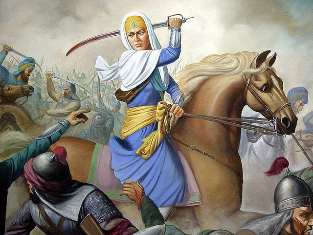
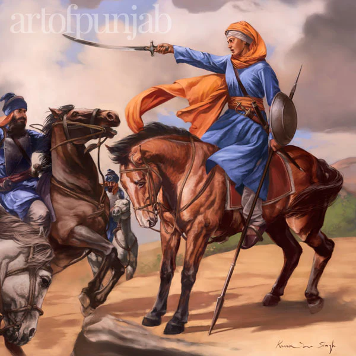

Who Was Mai Bhago Ji?
Mai Bhago Ji (also known as Mata Bhag Kaur) was a courageous Sikh woman who lived during the 17th century[cite: 10]. She is best remembered for rallying and leading 40 Sikh deserters back into battle at Muktsar Sahib and defending Guru Gobind Singh Ji with unmatched bravery[cite: 10]. She is hailed as the first woman warrior of the Khalsa[cite: 10].

Early Life - Mai Bhago Ji
Mai Bhago was born in the village of Jhabal Kalan (Amritsar district) in a devout Sikh family[cite: 10]. From a young age, she was inspired by the bravery of Sikh martyrs and received training in horse riding, swordsmanship, and spiritual teachings[cite: 10]. She was a strong believer in Guru Gobind Singh Ji’s mission and ideals[cite: 10].
The 40 Liberated Ones (Chali Mukte)
During the siege of Anandpur Sahib in 1704, 40 Sikhs deserted Guru Gobind Singh Ji and signed a document stating they were no longer his Sikhs[cite: 10]. When Mai Bhago heard of this, she was outraged[cite: 10]. She confronted the deserters and shamed them for abandoning the Guru in his time of need[cite: 10]. Her words and spirit reignited their faith, and she led them back into battle[cite: 10].
This historic act took place at the Battle of Khidrana (later renamed Muktsar Sahib), where all 40 Sikhs attained martyrdom, fighting bravely alongside Mai Bhago[cite: 10]. Guru Gobind Singh Ji blessed them as "Chali Mukte" (the Forty Liberated Ones)[cite: 10].

Warrior and Bodyguard
After the battle, Mai Bhago continued to serve Guru Gobind Singh Ji and later became his personal bodyguard[cite: 10]. Dressed in warrior attire and armed with weapons, she accompanied him in his travels and protected him from threats[cite: 10].
Later Life - Mai Bhago Ji
After Guru Gobind Singh Ji’s passing in 1708, Mai Bhago Ji retired to a life of meditation and spirituality in the village of Janwada (near Bidar in Karnataka)[cite: 10]. She spent her final years in devotion and teaching Sikh principles to others[cite: 10].
Legacy - Mai Bhago Ji
Mai Bhago Ji is celebrated as a symbol of Sikh bravery, spiritual strength, and gender equality[cite: 10]. Her story has inspired generations of Sikhs, especially women, to rise in defense of justice and righteousness[cite: 10]. Today, she is remembered in Sikh history as a saint-soldier who lived with honor and died with dignity[cite: 10].
